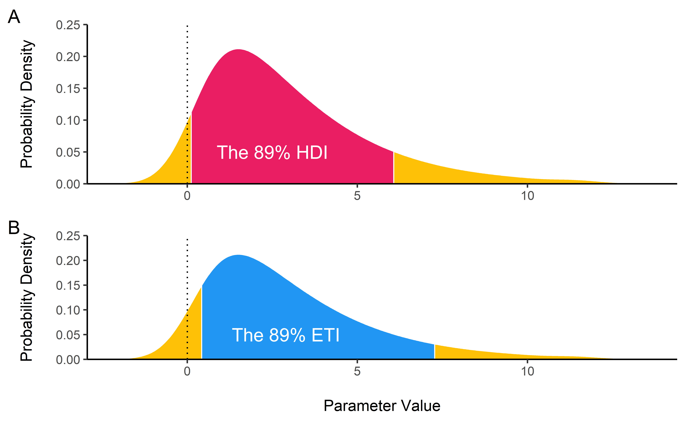
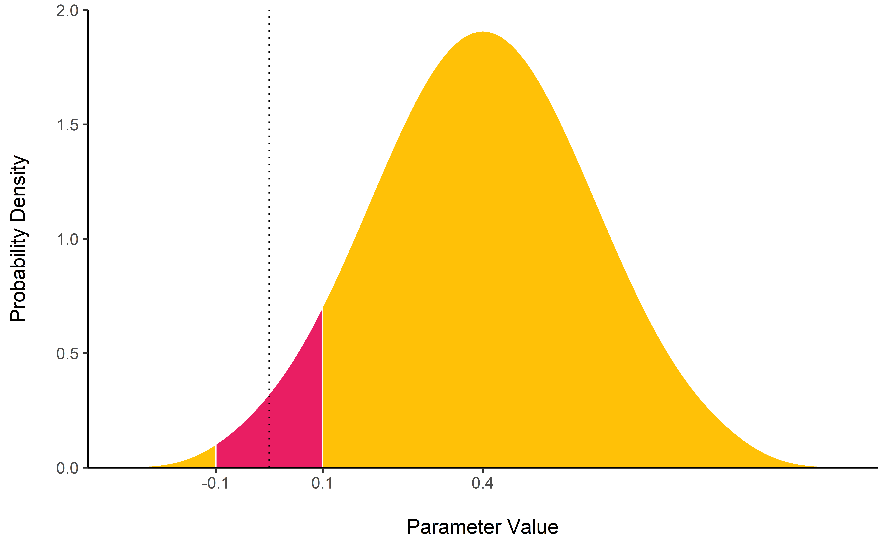
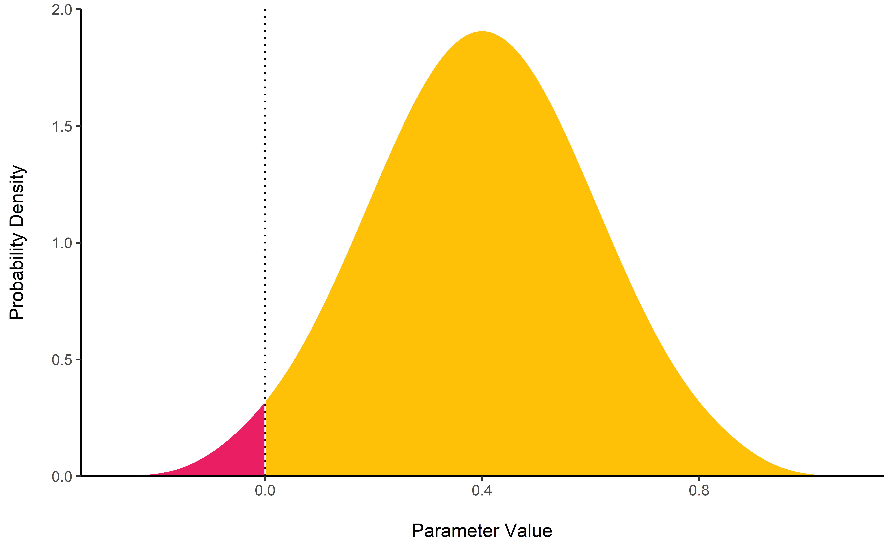
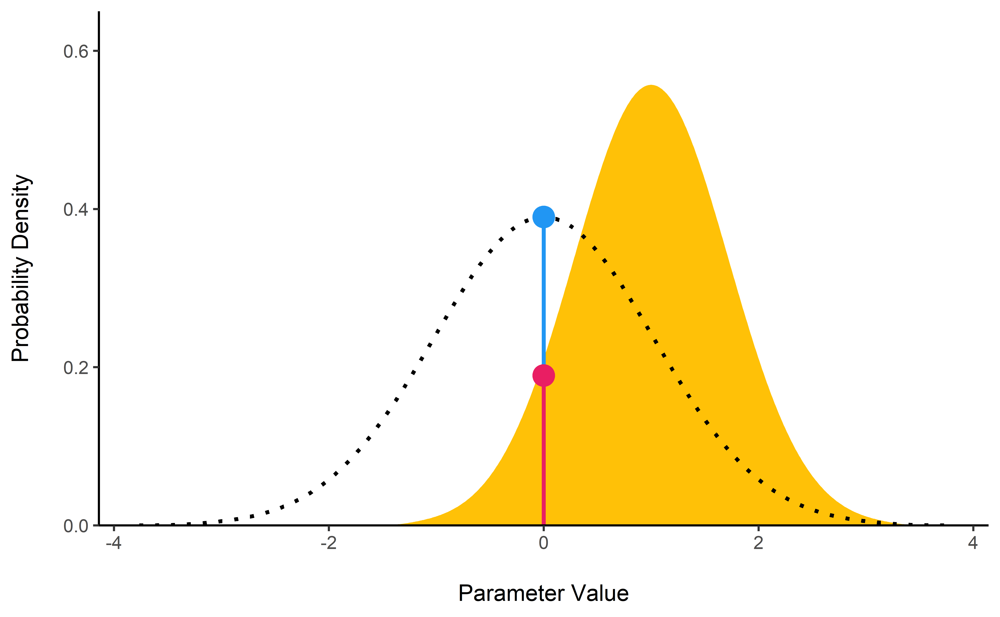
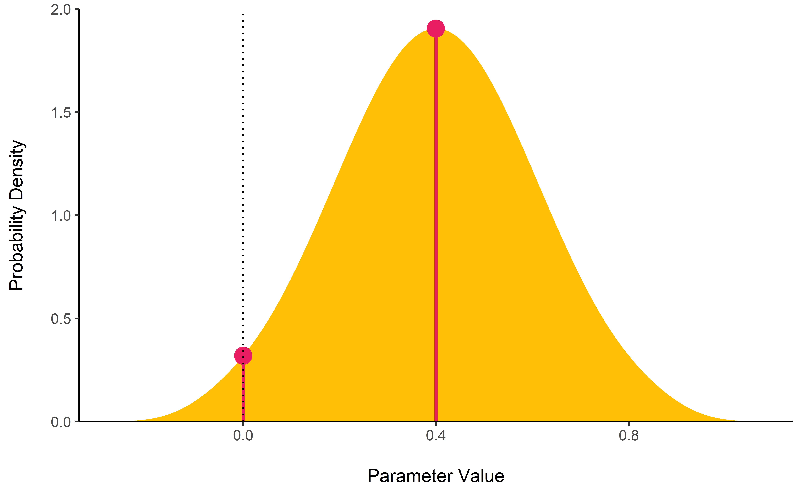

Become a Bayesian master you will
Existing R packages allow users to easily fit a large variety of models and extract and visualize the posterior draws. However, most of these packages only return a limited set of indices (e.g., point-estimates and CIs). bayestestR provides a comprehensive and consistent set of functions to analyze and describe posterior distributions generated by a variety of models objects, including popular modeling packages such as rstanarm, brms or BayesFactor.
Documentation


Click on the buttons above to access the package documentation and the easystats blog, and check-out these vignettes:
Features
describe_posterior() is the master function with which you can compute all of the indices cited below at once.
Point-estimates
MAP Estimate
map_estimate() find the Highest Maximum A Posteriori (MAP) estimate of a posterior, i.e., the most probable value.

Uncertainty
Highest Density Interval (HDI) - Credible Interval (CI)
hdi() computes the Highest Density Interval (HDI) of a posterior distribution, i.e., the interval which contains all points within the interval have a higher probability density than points outside the interval. The HDI can be used in the context of Bayesian posterior characterisation as Credible Interval (CI).
Unlike equal-tailed intervals (see ci()) that typically exclude 2.5% from each tail of the distribution, the HDI is not equal-tailed and therefore always includes the mode(s) of posterior distributions.
By default, hdi() returns the 89% intervals (ci = 0.89), deemed to be more stable than, for instance, 95% intervals (Kruschke, 2014). An effective sample size of at least 10.000 is recommended if 95% intervals should be computed (Kruschke 2014, p. 183ff). Moreover, 89 is the highest prime number that does not exceed the already unstable 95% threshold (McElreath, 2015).

Null-Hypothesis Significance Testing (NHST)
ROPE
rope() computes the proportion (in percentage) of the HDI (default to the 89% HDI) of a posterior distribution that lies within a region of practical equivalence.
Statistically, the probability of a posterior distribution of being different from 0 does not make much sense (the probability of it being different from a single point being infinite). Therefore, the idea underlining ROPE is to let the user define an area around the null value enclosing values that are equivalent to the null value for practical purposes (Kruschke 2010, 2011, 2014).
Kruschke (2018) suggests that such null value could be set, by default, to the -0.1 to 0.1 range of a standardized parameter (negligible effect size according to Cohen, 1988). This could be generalized: For instance, for linear models, the ROPE could be set as 0 +/- .1 * sd(y). This ROPE range can be automatically computed for models using the rope_range function.
Kruschke (2010, 2011, 2014) suggests using the proportion of the 95% (or 90%, considered more stable) HDI that falls within the ROPE as an index for “null-hypothesis” testing (as understood under the Bayesian framework, see equivalence_test).

Equivalence test
equivalence_test() a Test for Practical Equivalence based on the “HDI+ROPE decision rule” (Kruschke, 2018) to check whether parameter values should be accepted or rejected against an explicitly formulated “null hypothesis” (i.e., a ROPE).
Probability of Direction (pd)
p_direction() computes the Probability of Direction (pd, also known as the Maximum Probability of Effect - MPE). It varies between 50% and 100% (i.e., 0.5 and 1) and can be interpreted as the probability (expressed in percentage) that a parameter (described by its posterior distribution) is strictly positive or negative (whichever is the most probable). It is mathematically defined as the proportion of the posterior distribution that is of the median’s sign. Although differently expressed, this index is fairly similar (i.e., is strongly correlated) to the frequentist p-value.
Relationship with the p-value: In most cases, it seems that the pd corresponds to the frequentist one-sided p-value through the formula p-value = (1-pd/100) and to the two-sided p-value (the most commonly reported) through the formula p-value = 2*(1-pd/100). Thus, a pd of 95%, 97.5% 99.5% and 99.95% corresponds approximately to a two-sided p-value of respectively .1, .05, .01 and .001. See the reporting guidelines.

Bayes Factor
bayesfactor_parameters() computes Bayes factors against the null (either a point or an interval), bases on prior and posterior samples of a single parameter. This Bayes factor indicates the degree by which the mass of the posterior distribution has shifted further away from or closer to the null value(s) (relative to the prior distribution), thus indicating if the null value has become less or more likely given the observed data.
When the null is an interval, the Bayes factor is computed by comparing the prior and posterior odds of the parameter falling within or outside the null; When the null is a point, a Savage-Dickey density ratio is computed, which is also an approximation of a Bayes factor comparing the marginal likelihoods of the model against a model in which the tested parameter has been restricted to the point null.
prior <- rnorm(1000, mean = 0, sd = 1)
posterior <- rnorm(1000, mean = 1, sd = 0.7)
bayesfactor_parameters(posterior, prior, direction = "two-sided", null = 0)
For more info, see the Bayes factors vignette.
MAP-based p-value
p_map() computes a Bayesian equivalent of the p-value, related to the odds that a parameter (described by its posterior distribution) has against the null hypothesis (h0) using Mills’ (2014, 2017) Objective Bayesian Hypothesis Testing framework. It is mathematically based on the density at the Maximum A Priori (MAP) and corresponds to the density value at 0 divided by the density of the MAP estimate.

Utilities
Find ROPE’s appropriate range
rope_range(): This function attempts at automatically finding suitable “default” values for the Region Of Practical Equivalence (ROPE). Kruschke (2018) suggests that such null value could be set, by default, to a range from -0.1 to 0.1 of a standardized parameter (negligible effect size according to Cohen, 1988), which can be generalised for linear models to -0.1 * sd(y), 0.1 * sd(y). For logistic models, the parameters expressed in log odds ratio can be converted to standardized difference through the formula sqrt(3)/pi, resulting in a range of -0.05 to -0.05.
Density Estimation
estimate_density(): This function is a wrapper over different methods of density estimation. By default, it uses the base R density with by default uses a different smoothing bandwidth ("SJ") from the legacy default implemented the base R density function ("nrd0"). However, Deng & Wickham suggest that method = "KernSmooth" is the fastest and the most accurate.
Perfect Distributions
distribution(): Generate a sample of size n with near-perfect distributions.
Probability of a Value
density_at(): Compute the density of a given point of a distribution.
Credits
You can cite the package as following:
- Makowski, D., Ben-Shachar M. S., & Lüdecke, D. (2019). Understand and Describe Bayesian Models and Posterior Distributions using bayestestR. Available from https://github.com/easystats/bayestestR. DOI:10.5281/zenodo.2556486.